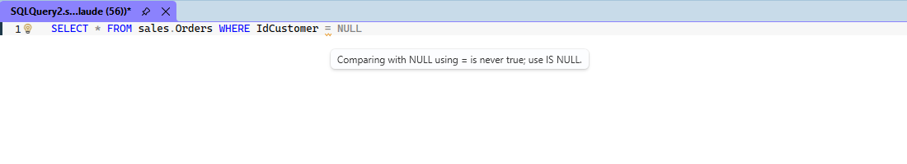
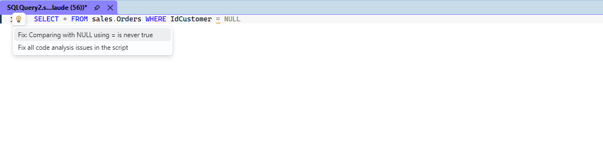
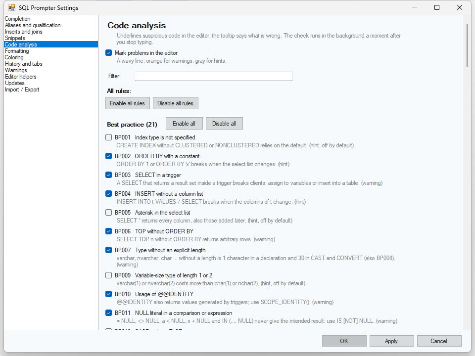

Code analysis and fixes
Squiggles for suspicious code, one-click repairs and the refactoring commands that rewrite a script.
Squiggles

= NULL is underlined; resting the mouse on it shows what is wrong.A background check runs a moment after you stop typing and underlines problems with a wavy line: orange for warnings, gray for hints. The tooltip says what is wrong. Rules that need the database (for example an unqualified column or a missing schema) use the loaded metadata and stay quiet while it is not loaded. Mark problems in the editor turns the whole analysis off.
Quick fixes

When the caret is on an issue that has a repair, a light bulb appears in the margin (Ctrl+. opens its menu). A repair is made only for the plain shapes it understands; otherwise the issue has only its message. SQL Prompter > Refactor > Fix Code Analysis Issues applies every repair in the script at once. Repairs include = NULL to IS NULL, @@IDENTITY to SCOPE_IDENTITY(), a type without a length, TOP without ORDER BY, NOT IN (subquery), an old-style join, and, with metadata loaded, missing schemas.
The rules

The catalog has 100 rules in seven categories. Each rule has a code, a severity (warning or hint) and a default (on or off). The settings page lists them with a filter box and Enable all / Disable all for everything and for each category.
| Category (code prefix) | Examples |
|---|---|
| Best practice (BP, SP) | BP004 INSERT without a column list; BP005 asterisk in the select list; BP006 TOP without ORDER BY; BP010 @@IDENTITY; BP011 NULL in a comparison; BP017 / BP018 DELETE / UPDATE without WHERE; SP001 JOIN without ON. |
| Deprecated syntax (DEP) | DEP001 table hint without WITH; GROUP BY ALL; SETUSER; WRITETEXT and its relatives; TAPE backup devices. |
| Execution (EI) | Mistakes that fail or misbehave when the script runs: FETCH, CLOSE and DEALLOCATE of an undefined or unopened cursor, a non-scalar subquery used as a scalar, a procedure name that starts with sp_, ISNUMERIC(), ORDER BY in a view, a NOT NULL column added without a default. |
| Miscellaneous (MI) | Unused table variables, temporary tables, variables and parameters; unqualified columns; WAITFOR. |
| Performance (PE) | Missing schema names; SELECT INTO; index, join, table and query hints; SET NOCOUNT OFF; COUNT instead of EXISTS; cursor options; IN (subquery). |
| Script (SC) | TODO / BUG comments, a procedure that grants itself permissions, line endings that are not CR LF. |
| Style (ST) | Old-style join (FROM a, b), old-style alias with =, !=, tables without an alias, EXEC proc 1, 2 without parameter names. |
Refactor menu
These commands rewrite the whole script (or the selection, where it makes sense); each is one undo step. They are in SQL Prompter > Refactor and in the quick actions popup.
| Command | What it does |
|---|---|
| Qualify Object Names | Adds the schema to single-part names (details). |
| Expand All Select Stars | Replaces every * with the columns. |
| Remove Square Brackets | Removes the brackets that are not needed. |
| Insert Semicolons | Ends the statements with a semicolon. |
| Remove Unused Variables | Removes DECLAREs that nothing uses. |
| Add N Prefix To Strings | Turns 'text' into N'text'. |
| Add AS To Aliases / Remove AS From Aliases | Changes the style of aliases. |
| Add Commas To Selected Lines | Every selected line with text except the last gets a comma. |
| Add Quotes And Commas To Selected Lines | Each line becomes 'text' (quotes doubled), with a comma except on the last line. |
| Script Summary | Opens a new window on the same connection with a block comment that summarizes the script: batches, statements by kind, objects read, changed, executed, created and dropped, temporary tables and variables. |
| Fix Code Analysis Issues | Applies all repairs (above). |
| Preview UPDATE/DELETE As SELECT, Run And Roll Back (Dry Run) | See Editor and grid tools. |